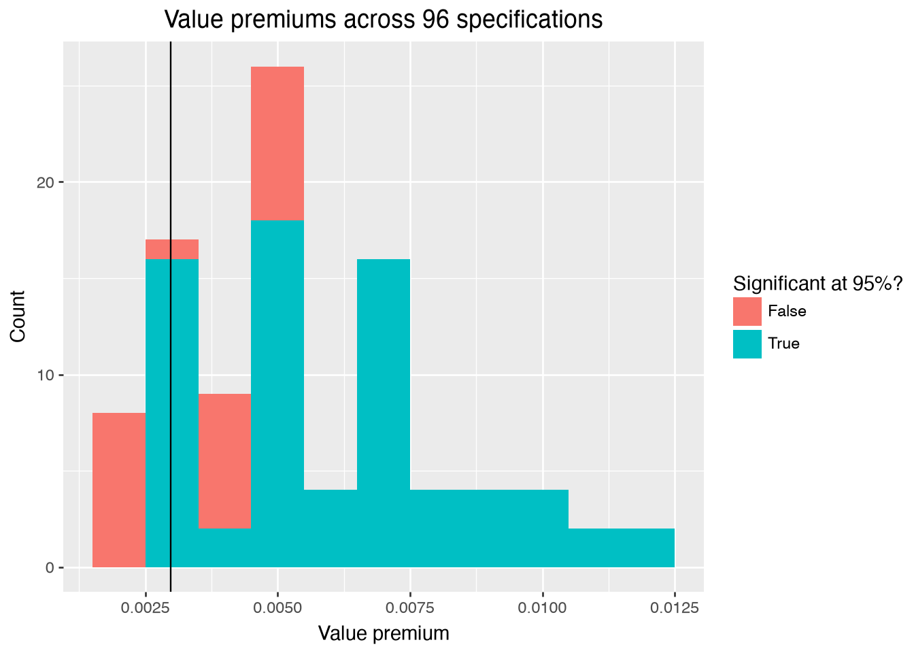
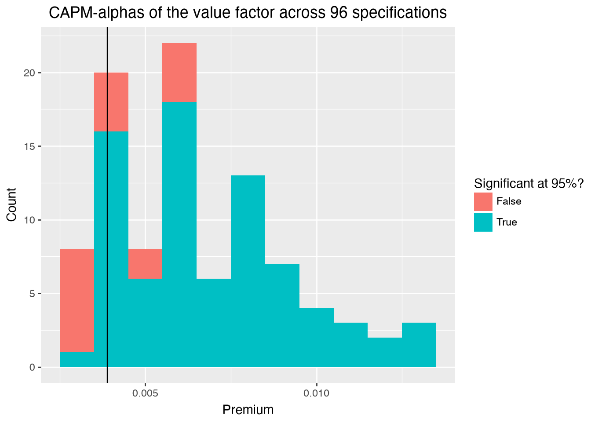

import polars as pl
import tidyfinance as tf
import pyfixest as pf
from itertools import product
from joblib import Parallel, delayed, cpu_count
from plotnine import ggplot, aes, geom_histogram, geom_vline, labs
tf.set_backend("polars")Replicating the Value Factor - Paul Sibille
This document replicates the value factor of the Fama-French five-factor model and then asks how fragile the resulting value premium is (full replication package available at https://github.com/Paulsibille/BSE_assignement/tree/main). I first rebuild the data pipeline from class, then construct the HML factor under the standard timing convention using both independent and dependent sorts, and finally recompute the premium across a grid of 96 plausible specifications to evaluate the non-standard errors around the estimate.
We use the following packages throughout the document:
1. Data Preparation
We download the published Fama/French 5 Factors (2x3) with tf.download_data(), keep a raw copy, and save a tidied version restricted to 1970-2025 for the analysis. The synthetic CRSP and Compustat data are loaded from the cleaned parquet files given in class.
factors_ff5_monthly_raw = tf.download_data(
domain="Fama-French",
dataset="Fama/French 5 Factors (2x3)",
)
factors_ff5_monthly_raw.write_parquet("data/raw/factors_ff5_monthly.parquet")
factors_ff5_monthly = factors_ff5_monthly_raw.filter(
pl.col("date").dt.year().is_between(1970, 2025)
).with_columns(pl.col("date").cast(pl.Date))
factors_ff5_monthly.write_parquet("data/clean/factors_ff5_monthly.parquet")
crsp_monthly = pl.read_parquet("data/clean/crsp_monthly.parquet")
compustat = pl.read_parquet("data/clean/compustat_annual.parquet")No start_date or end_date provided. Returning the full dataset.2. Value Factor Replication
We follow the Fama-French timing convention: size is the market capitalization from June of year \(t\), and book-to-market divides book equity from the fiscal year \(t-1\) by the market equity of end of year \(t-1\). Portfolios are formed in June of year \(t\), while the first return is used in July of year \(t\).
size = (
crsp_monthly.filter(pl.col("date").dt.month() == 6)
.with_columns(sorting_date=pl.col("date").dt.offset_by("1mo"))
.select(["permno", "exchange", "industry", "sorting_date", "mktcap"])
.rename({"mktcap": "me"})
)
market_equity = (
crsp_monthly.filter(pl.col("date").dt.month() == 12)
.with_columns(sorting_date=pl.col("date").dt.offset_by("7mo"))
.select(["permno", "gvkey", "sorting_date", "mktcap"])
.rename({"mktcap": "me_dec"})
)
book_to_market = (
compustat.with_columns(sorting_date=pl.date(pl.col("datadate").dt.year() + 1, 7, 1))
.join(market_equity, how="inner", on=["gvkey", "sorting_date"])
.with_columns(bm=pl.col("be") / pl.col("me_dec"))
.select(["permno", "sorting_date", "bm"])
)
sorting_variables = (
size.join(book_to_market, how="inner", on=["permno", "sorting_date"])
.drop_nulls(["me", "bm"])
.unique(subset=["permno", "sorting_date"])
)
# monthly returns mapped to the July-to-June period each sort governs
portfolios_returns = crsp_monthly.with_columns(
sorting_date=pl.when(pl.col("date").dt.month() >= 7)
.then(pl.date(pl.col("date").dt.year(), 7, 1))
.otherwise(pl.date(pl.col("date").dt.year() - 1, 7, 1))
).select(["permno", "sorting_date", "date", "ret_excess", "mktcap_lag"])For the replication itself, we assign stocks into terciles and compute value-weighted portfolio returns. In the independent sort, size and book-to-market portfolios are formed separately on the full cross-section. In the dependent sort, stocks are first sorted into size terciles and the book-to-market sort then happens within each size bucket. In both cases, the value premium is the return of the high book-to-market portfolios minus the low ones.
def assign_portfolio(sorting_variable, n_portfolios):
"""Assign each stock to a portfolio bin between breakpoints."""
return pl.col(sorting_variable).qcut(
n_portfolios,
labels=[str(i) for i in range(1, n_portfolios + 1)],
allow_duplicates=True,
)
value_portfolios_indep = (
sorting_variables.with_columns(
portfolio_bm=assign_portfolio("bm", n_portfolios=3).over("sorting_date"),
# assign portfolio_me independently of portfolio_bm
portfolio_me=assign_portfolio("me", n_portfolios=3).over("sorting_date"),
)
.join(portfolios_returns, on=["permno", "sorting_date"])
.group_by(["date", "portfolio_bm", "portfolio_me"])
.agg(
ret=(pl.col("ret_excess") * pl.col("mktcap_lag")).sum()
/ pl.col("mktcap_lag").sum()
)
)
value_premium_indep = (
value_portfolios_indep.group_by(["date", "portfolio_bm"])
.agg(ret=pl.col("ret").mean())
.group_by("date")
.agg(
# high B/M (top portfolio) minus low B/M (bottom portfolio)
value_premium=(
pl.col("ret")
.filter(pl.col("portfolio_bm") == pl.col("portfolio_bm").max())
.mean()
- pl.col("ret")
.filter(pl.col("portfolio_bm") == pl.col("portfolio_bm").min())
.mean()
)
)
.select(pl.col("value_premium").mean())
)value_portfolios_dep = (
sorting_variables.with_columns(
portfolio_me=assign_portfolio("me", n_portfolios=3).over("sorting_date")
)
# sort by bm *within* each size bucket: partition by sorting_date AND portfolio_me
.with_columns(
portfolio_bm=assign_portfolio("bm", n_portfolios=3).over(
["sorting_date", "portfolio_me"]
)
)
.join(portfolios_returns, on=["permno", "sorting_date"])
.group_by(["date", "portfolio_bm", "portfolio_me"])
.agg(
ret=(pl.col("ret_excess") * pl.col("mktcap_lag")).sum()
/ pl.col("mktcap_lag").sum()
)
)
value_premium_dep = (
value_portfolios_dep.group_by(["date", "portfolio_bm"])
.agg(ret=pl.col("ret").mean())
.group_by("date")
.agg(
value_premium=(
pl.col("ret")
.filter(pl.col("portfolio_bm") == pl.col("portfolio_bm").max())
.mean()
- pl.col("ret")
.filter(pl.col("portfolio_bm") == pl.col("portfolio_bm").min())
.mean()
)
)
.select(pl.col("value_premium").mean())
)The table below compares both replicated premiums to the published HML factor:
hml_published = factors_ff5_monthly["hml"].mean()
comparison_value_premium = pl.DataFrame(
{
"design": ["Independent", "Dependent", "Published HML"],
"value_premium": [
value_premium_indep.item(),
value_premium_dep.item(),
hml_published,
],
}
)
comparison_value_premium.write_csv("results/tables/value_premium_comparison.csv")
comparison_value_premium
shape: (3, 2)
| design | value_premium |
|---|---|
| str | f64 |
| "Independent" | 0.004222 |
| "Dependent" | 0.004239 |
| "Published HML" | 0.00298 |
Both designs deliver a positive monthly value premium of about 0.42 percent, slightly above the published HML average of about 0.30 percent. The gap is expected since we work with synthetic data, but the replication clearly captures the sign and magnitude of the published factor. Independent and dependent sorts show quite similar monthly value premium.
3. Non-Standard Errors
We now take the specification grid from the p-hacking hands-on and extend it with one dimension not covered in class: independent versus dependent sorts. The compute_value_premium() function below takes a dependent_sort argument. When it is True, stocks are first sorted into three size buckets using the chosen exchange breakpoints, and the book-to-market sort happens within each bucket. On the other hand, when it is False, the sort uses the full cross-section as in class. For each specification, We return the average premium with a Newey-West t-statistic and, in addition, its CAPM-alpha.
def assign_portfolio(data, exchanges, sorting_variable, n_portfolios):
"""Assign portfolios using breakpoints from the chosen exchanges."""
quantiles = [i / n_portfolios for i in range(n_portfolios + 1)]
subset = data.filter(pl.col("exchange").is_in(exchanges))
breakpoints = [
subset[sorting_variable].quantile(q, interpolation="linear") for q in quantiles
]
breakpoints = sorted(set(breakpoints))
breakpoints[0], breakpoints[-1] = float("-inf"), float("inf")
return data.select(
pl.col(sorting_variable)
.cut(
breaks=breakpoints[1:-1],
labels=[str(i) for i in range(1, len(breakpoints))],
left_closed=True,
)
.cast(pl.String)
.cast(pl.Int64)
).to_series()
def calculate_returns(value_weighted):
# value-weighted OR equal-weighted mean of ret_excess
if value_weighted:
return (pl.col("ret_excess") * pl.col("mktcap_lag")).sum() / pl.col(
"mktcap_lag"
).sum()
return pl.col("ret_excess").mean()
def compute_value_premium(
n_portfolios=5,
exchanges=["NYSE", "NASDAQ", "AMEX"],
value_weighted=True,
dependent_sort=False,
sorting_variables=None,
returns=None,
):
# assign B/M portfolios on the annual cross-section, then stack the groups
if dependent_sort:
# first sort into size buckets, then B/M *within* each size bucket
groups = []
for _, group in sorting_variables.group_by("sorting_date"):
group = group.with_columns(
portfolio_me=assign_portfolio(group, exchanges, "me", 3)
)
groups.append(
pl.concat(
[
subgroup.with_columns(
portfolio=assign_portfolio(
subgroup, exchanges, "bm", n_portfolios
)
)
for _, subgroup in group.group_by("portfolio_me")
]
)
)
assigned = pl.concat(groups).drop("portfolio_me")
else:
assigned = pl.concat(
[
group.with_columns(
portfolio=assign_portfolio(group, exchanges, "bm", n_portfolios)
)
for _, group in sorting_variables.group_by("sorting_date")
]
)
value_premium = (
assigned
# attach the monthly returns governed by each sort
.join(returns, on=["permno", "sorting_date"])
.group_by(["portfolio", "date"])
.agg(ret=calculate_returns(value_weighted))
.group_by("date")
.agg(
# high B/M (top portfolio) minus low B/M (bottom portfolio)
value_premium=(
pl.col("ret")
.filter(pl.col("portfolio") == pl.col("portfolio").max())
.mean()
- pl.col("ret")
.filter(pl.col("portfolio") == pl.col("portfolio").min())
.mean()
)
)
)
# Newey-West t-test of the average premium (3 lags)
nw = pf.feols(
"value_premium ~ 1",
data=value_premium,
vcov="NW",
vcov_kwargs={"lag": 3, "time_id": "date"},
).tidy()
# CAPM-alpha of the premium
capm_data = value_premium.join(factors_ff5_monthly, on="date", how="left")
capm = pf.feols(
"value_premium ~ mkt_excess",
data=capm_data,
vcov="NW",
vcov_kwargs={"lag": 3, "time_id": "date"},
).tidy()
return pl.DataFrame(
{
"test": ["Newey-West", "CAPM-alpha"],
"estimate": [
nw.loc["Intercept", "Estimate"],
capm.loc["Intercept", "Estimate"],
],
"t_stat": [
nw.loc["Intercept", "t value"],
capm.loc["Intercept", "t value"],
],
}
)The extended grid varies the number of book-to-market portfolios, the exchanges used for breakpoints, value- versus equal-weighting, the sample filters, and the new sorting dimension, which yields 96 specifications in total. We evaluate all of them in parallel.
n_portfolios = [2, 5, 10]
exchanges = [["NYSE"], ["NYSE", "NASDAQ", "AMEX"]]
value_weighted = [True, False]
dependent_sorts = [True, False]
samples = [
sorting_variables,
sorting_variables.filter(pl.col("industry") != "Finance"),
sorting_variables.filter(pl.col("sorting_date") < pl.date(1990, 7, 1)),
sorting_variables.filter(pl.col("sorting_date") >= pl.date(1990, 7, 1)),
]
# build the full Cartesian product of options (3 × 2 × 2 × 2 × 4 = 96)
p_hacking_setup = list(
product(n_portfolios, exchanges, value_weighted, dependent_sorts, samples)
)
n_cores = cpu_count() - 1
p_hacking_results = pl.concat(
Parallel(n_jobs=n_cores)(
delayed(compute_value_premium)(x, y, z, d, sv, portfolios_returns)
for x, y, z, d, sv in p_hacking_setup
)
)
p_hacking_results.write_csv("results/tables/p_hacking_results.csv")Figure 1 shows the distribution of the 96 value premium estimates, with the published Fama-French value factor marked as a vertical line.
p_hacking_nw = p_hacking_results.filter(pl.col("test") == "Newey-West").with_columns(
is_significant=pl.col("t_stat").abs() >= 1.96
)
hml_mean = factors_ff5_monthly["hml"].mean()
fig_p_hacking_nw = (
ggplot(p_hacking_nw, aes(x="estimate", fill="is_significant"))
+ geom_histogram(binwidth=0.001)
+ geom_vline(xintercept=hml_mean)
+ labs(
x="Value premium",
y="Count",
fill="Significant at 95%?",
title="Value premiums across 96 specifications",
)
)
fig_p_hacking_nw.show()
In addition, Figure 2 repeats the exercise with the CAPM-alphas of each specification, using the CAPM-alpha of the published HML factor as the reference line.
p_hacking_capm = p_hacking_results.filter(pl.col("test") == "CAPM-alpha").with_columns(
is_significant=pl.col("t_stat").abs() >= 1.96
)
# CAPM-alpha of the published HML, for a like-for-like reference line
hml_capm_alpha = pf.feols(
"hml ~ mkt_excess",
data=factors_ff5_monthly,
vcov="NW",
vcov_kwargs={"lag": 3, "time_id": "date"},
).coef()["Intercept"]
fig_p_hacking_capm = (
ggplot(p_hacking_capm, aes(x="estimate", fill="is_significant"))
+ geom_histogram(binwidth=0.001)
+ geom_vline(xintercept=hml_capm_alpha)
+ labs(
x="Premium",
y="Count",
fill="Significant at 95%?",
title="CAPM-alphas of the value factor across 96 specifications",
)
)
fig_p_hacking_capm.show()
4. Discussion
In the first section, I rebuilt the class pipeline: the published FF5 factors come from tf.download_data() and are saved in a tidied, date-restricted version, while the synthetic CRSP and Compustat data are read from the cleaned files produced in the tutorials. In the second section, I applied the Fama-French timing convention to build the sorting variables, and computed the value premium under independent and dependent sorts. Both come out around 0.42 percent per month, close to the published HML average of 0.30 percent. In the third section, I extended the p-hacking grid with the independent versus dependent sorting choice and recomputed the premium across all 96 specifications.
The distribution of estimates implied by the number of methodological decision one can make, concludes our analysis. The premium is positive in essentially every specification, but its magnitude varies substantially across methodological choices, and only about three quarters of the specifications are significant at the 95 percent level. A single point estimate of the value premium therefore hides a lot of researcher degrees of freedom: two careful researchers using the same data could report noticeably different premiums, or disagree on its significance, simply because of different methodological choices. As mentioned in class, displaying a similar histogram in the literature each time a new factor is reported could help editors, reviewers, and the broader scientific community better assess the robustness of the presented results. I believe that researchers, even in entirely different fields, face numerous methodological choices. Such a framework could therefore be applied not only to asset pricing but also to any other field characterized by substantial methodological heterogeneity.